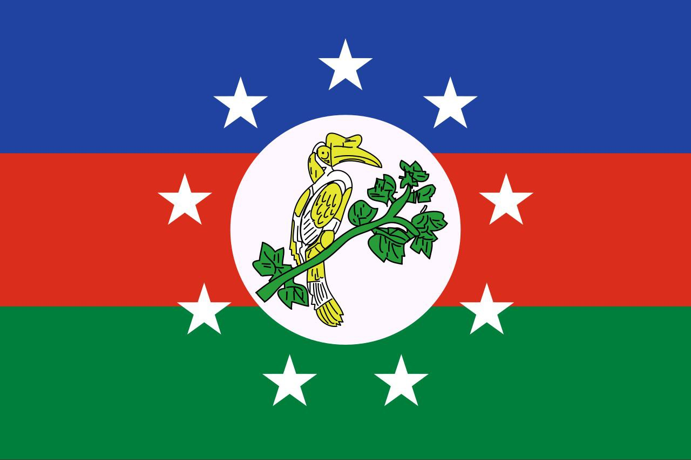
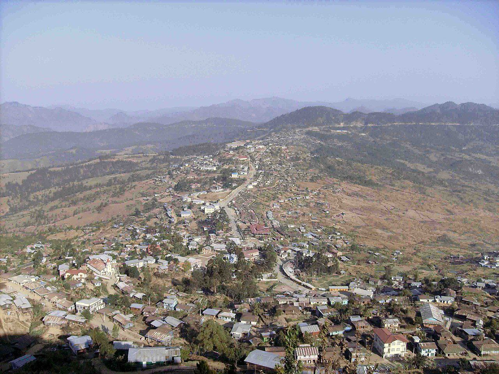
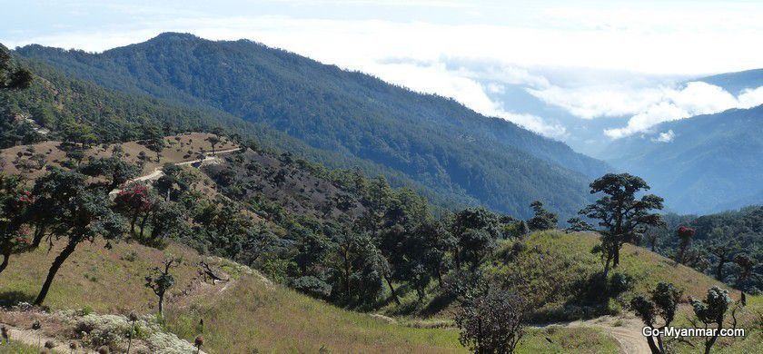
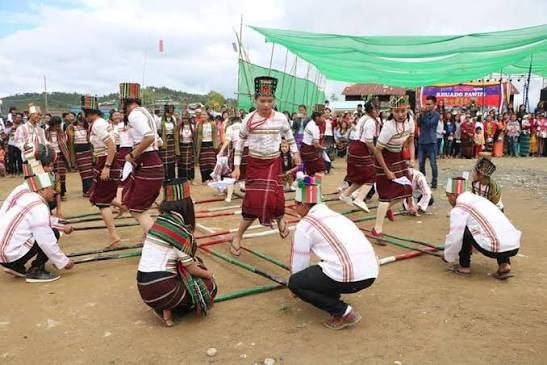
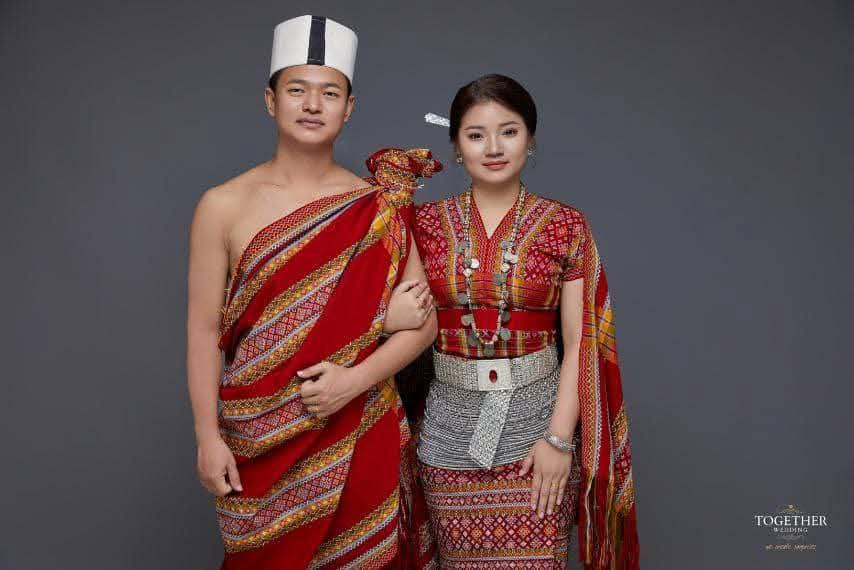
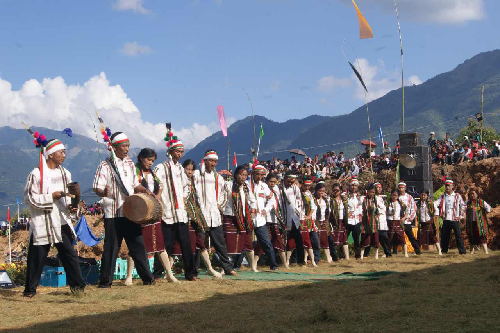

Profile
The Chin people, sometimes referred to as “Zo” or “Zomi,” are one of the major ethnic groups of Myanmar. They consist of various subgroups such as Lai or Hakha Chin, Falam Chin, Tedim or Paite Chin, Zomi, Mizo, Asho Chin, Khumi, Dai, Zotung, Mara, and others. According to the 2014 Census, the Chin population is estimated at around 1.5 million in Myanmar. They speak a range of Sino-Tibetan languages belonging mainly to the Kuki-Chin branch, with notable languages including Lai (Hakha), Falam, Tedim or Paite, Mizo, and Asho. While many Chin languages today are written using the Latin alphabet, some also make use of the Myanmar script.

Location
Chin State, located in western Myanmar along the borders with India and Bangladesh , is a mountainous region characterized by steep hills and deep valleys. It remains one of the least developed areas in Myanmar, with limited infrastructure compared to other parts of the country. Oral traditions and historical research suggest that they migrated from the upper regions of Tibet and China, gradually moving southward into present-day Myanmar, northeastern India, and Bangladesh over many centuries. Their settlement in the mountainous Chin Hills gave them a distinct identity, shaped by geography and relative isolation.

Attraction
Major towns in Chin State include Hakha, the capital, as well as Falam, Tedim, Mindat, Thantlang, and Matupi. Among its notable tourist attractions is Mount Victoria (Nat Ma Taung), the highest peak in Chin State at 3,053 meters, located within the scenic Nat Ma Taung National Park.

Culture and Traditions
Traditional Chin villages are often built on mountaintops, reflecting their close connection to the rugged landscape. The Chin people are known for their hospitality and strong sense of community, often expressed through shared feasts and festivals.
Chin music traditionally uses instruments such as the Khuang (drum), gongs, and bamboo flutes. Group dances are performed during festivals, often involving circular movements and chanting. Christian hymns and modern instruments have also become a major part of Chin music after missionary influence.

Traditional Dress
Chin traditional dress is renowned for its beautifully handwoven textiles, which are often adorned with bright colors, stripes, and intricate patterns. Each Chin subgroup has its own distinctive style. For example, Lai or Hakha women typically wear long woven skirts known as puan, featuring bold red and black designs, while Falam and Tedim groups have their own unique weaving patterns. Traditional shawls and tunics are commonly worn during festivals, weddings, and other ceremonial occasions, reflecting both cultural identity and skilled craftsmanship.

Festival
They celebrate several important festivals throughout the year. Chin National Day, observed on 20 February, commemorates the unity and political history of the Chin people. Harvest festivals such as Khuahrum and Lawngbawl are closely tied to agricultural traditions and serve as occasions to give thanks for successful crops. Due to the predominantly Christian population, Christmas and Easter are also widely celebrated across the region. In addition, some communities continue to observe traditional animist festivals, performing rituals to honor local spirits, or nats.